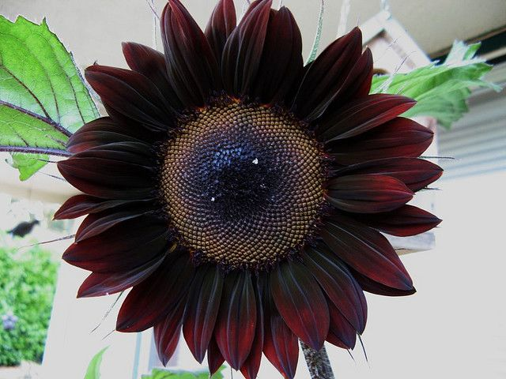
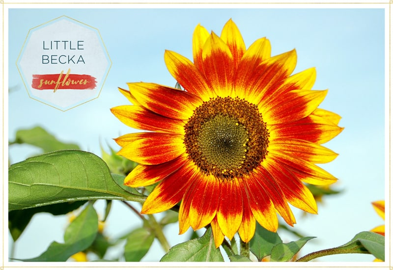
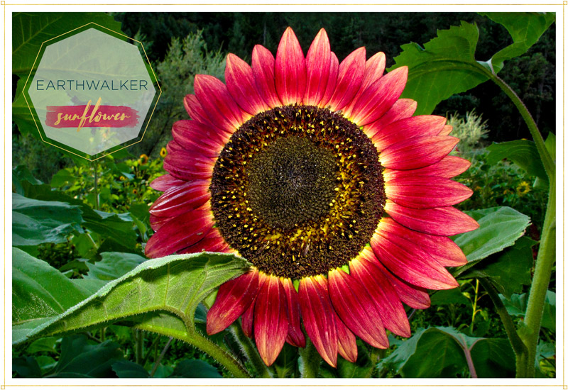
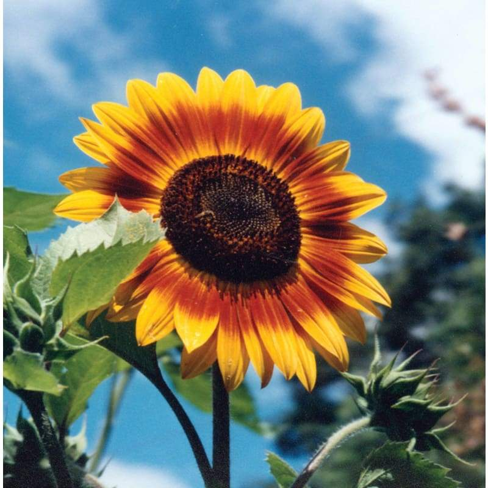
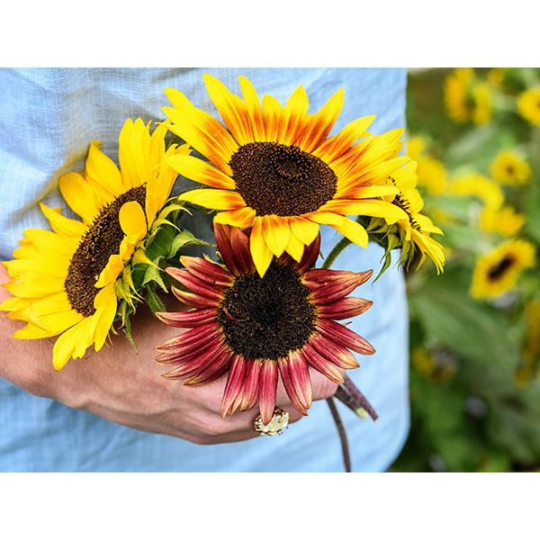
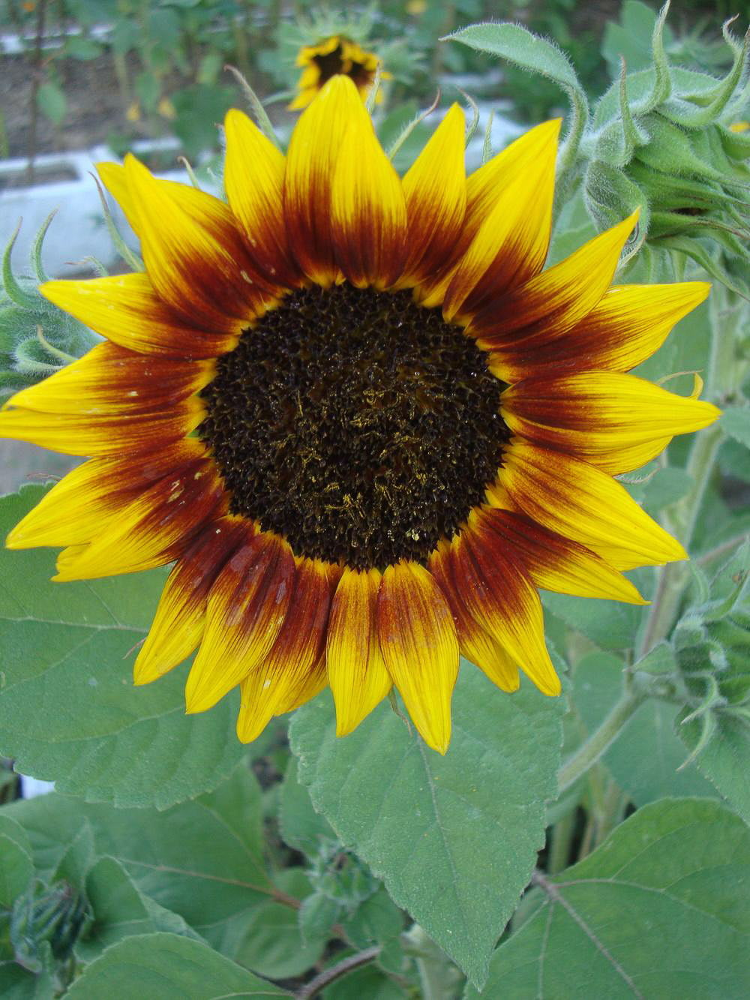
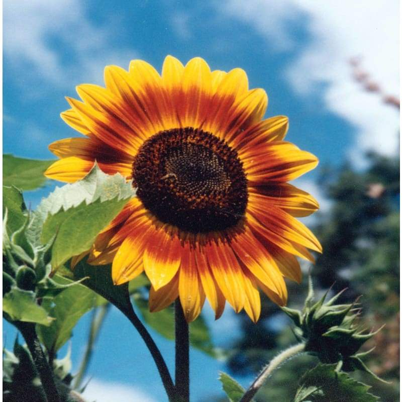
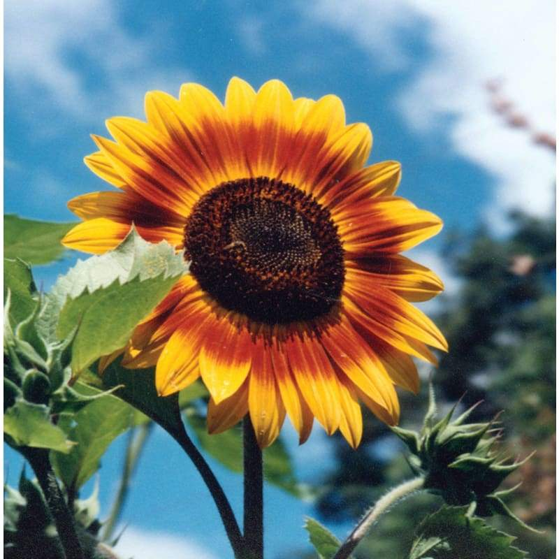
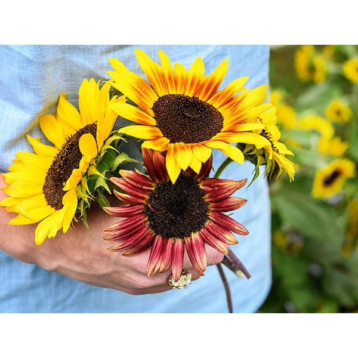
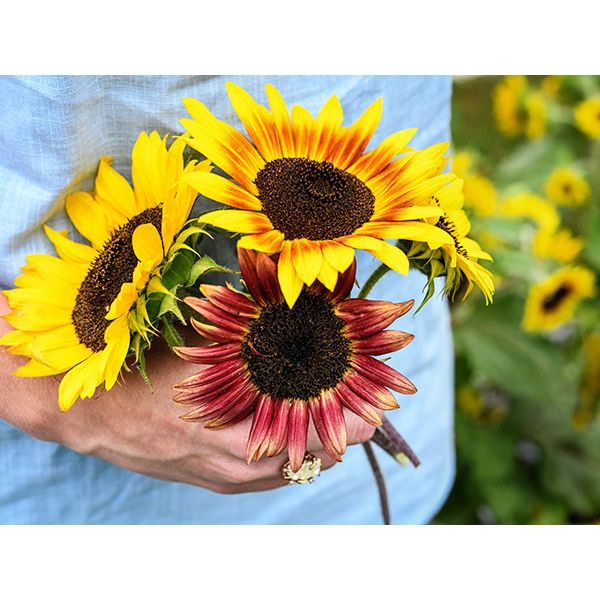

Home
Score
Shop
JS World
Contact
MAP
Anime
Sunflower
More
My Favourite Flower
Not as beautiful as a rose but also not as fragile.
1 / 3
Sunflower
2 / 3
My favorite
3 / 3
A flower from Heaven
Some Extra glimpses
There are 20,000 species of Sunflower
  





 

 
